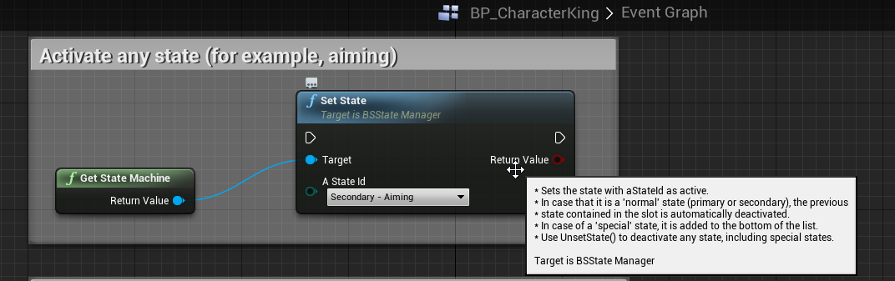
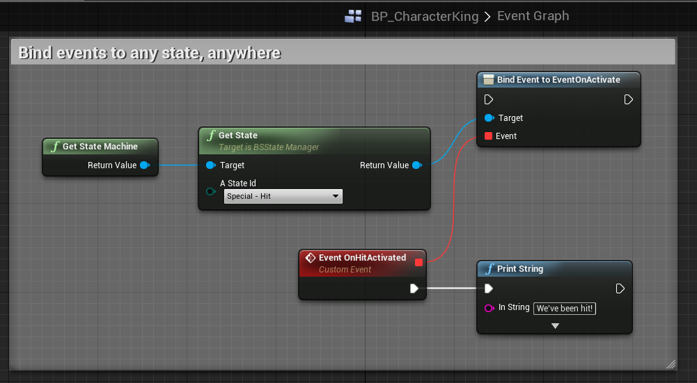
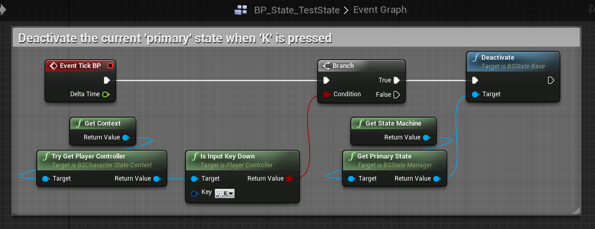
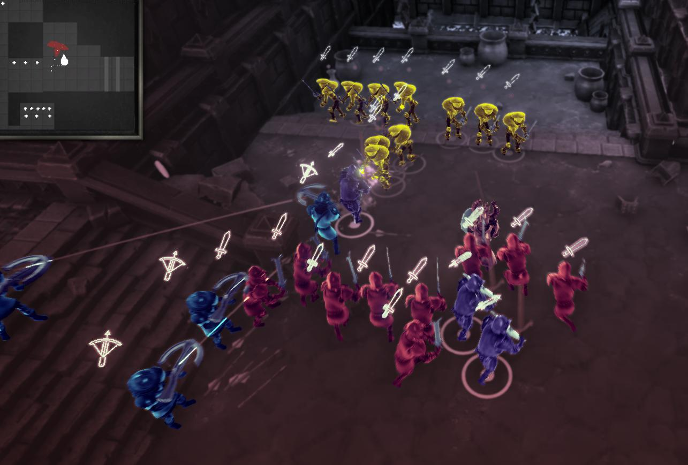

Bolt Storm
| Project Type | University / group project |
| Software Used | Unreal Engine 4 |
| Languages Used | C++, Blueprints, C# |
| Primary Role(s) | Gameplay programming |

Bolt Storm is the project I'm currently part of as Gameplay Programmer, during my 3rd year at NHTV University. The project has around 25 team members, 12 of which are programmers. I joined the project when it transitioned from pre-production to production.
Finite State Machine (for character logic)
I developed a finite state machine which can be applied to any character (player, co-op players, AI) to support the rewrite of character logic at the start of the production phase. The state machine is quite simplistic, it features an ordered list of states, with the first few slots reserved for 'primary' states (walking, strafing, etc. - states which affect the lower body of the player) and 'secondary' states (shooting, aiming, etc. - states which affect the upper body). The state machine is written in C++, but is entirely accessible from Blueprints.
CODE SNIPPET - State Machine
The following code demonstrates a header for a logic state within the state machine:
/**
* Character logic state for walking
*/
UCLASS()
class BOLTSTORM_API UBsStateWalk : public UBsCharacterStateBase
{
GENERATED_BODY()
public: // ctor / dtor
UBsStateWalk();
~UBsStateWalk();
protected: // implementation
virtual void OnInitialize() override;
virtual void OnActivate() override;
virtual void OnDeactivate() override;
virtual void Tick(float DeltaTime) override;
virtual void HandleInputAxis(float aLS_X, float aLS_Y, float aRS_X, float aRS_Y) override;
};
The following code is part of the header of the state machine itself:
UCLASS(Blueprintable)
class BOLTSTORM_API UBsStateMachine : public UObject
{
friend class ABsCharacterPlayerBase;
GENERATED_BODY()
public: // ctor / dtor
UBsStateMachine();
~UBsStateMachine();
public: // functions
/*****************************************************************************
* General
*****************************************************************************/
/* Adds the state to the list of registered states (mRegisteredStatesArray) */
UFUNCTION(BlueprintCallable, Category = "BS: State Manager")
bool RegisterState(UBsStateBase* aState);
/*
* Removes the state from the list of registered states (mRegisteredStatesArray)
* and eventually deactivates it, if the state is still active.
*/
UFUNCTION(BlueprintCallable, Category = "BS: State Manager")
bool UnregisterState(UBsStateBase* aState);
/* Returns the state with the given EStateId */
UFUNCTION(BlueprintPure, Category = "BS: State Manager")
UBsStateBase* GetState(EStateId aStateId);
UFUNCTION(BlueprintPure, Category = "BS: State Manager")
int32 GetNumActiveStates();
UFUNCTION(BlueprintPure, Category = "BS: State Manager")
bool IsStateActive(EStateId aStateId);
/*****************************************************************************
******************************************************************************
** IMPORTANT NOTE !!
** The following Set and Unset functions DO NOT actually modify mActiveStatesArray.
** They ONLY set a set / unset flag within the state, which are checked the next frame.
** Only then are the actual Set/Unset functions called (SetStateNow, UnsetStateNow)
** The 'Now' functions are exposed to C++ users, but not to Blueprints.
******************************************************************************
*****************************************************************************/
/*
* Sets the state with aStateId as active.
* In case that it is a 'normal' state (primary or secondary), the previous
* state contained in the slot is automatically deactivated.
* In case of a 'special' state, it is added to the bottom of the list.
* Use UnsetState() to deactivate any state, including special states.
*/
UFUNCTION(BlueprintCallable, Category = "BS: State Manager")
bool SetState(EStateId aStateId);
/* Same as SetState, but fails silently if the state doesn't exist*/
UFUNCTION(BlueprintCallable, Category = "BS: State Manager")
bool TrySetState(EStateId aStateId);
/* Only use SetStateNow if you know what you're doing! Recommended to use SetState instead. */
bool SetStateNow(EStateId aStateId);
/* Same as SetState but takes an instance of BsStateBase instead */
UFUNCTION(BlueprintCallable, Category = "BS: State Manager")
bool SetStateByInstance(UBsStateBase* aState);
/* Only use SetStateByInstanceNow if you know what you're doing! Recommended to use SetStateByInstanceNow instead. */
bool SetStateByInstanceNow(UBsStateBase* aState);
/*
* Deactivates the state with aStateId.
* In case that it is a 'normal' state (primary or secondary), the slot
* is set to nullptr. In case of a 'special* state it is simply removed
* from the list.
*/
UFUNCTION(BlueprintCallable, Category = "BS: State Manager")
bool UnsetState(EStateId aStateId)
;
/* Same as UnsetState, but fails silently if the state doesn't exist*/
UFUNCTION(BlueprintCallable, Category = "BS: State Manager")
bool TryUnsetState(EStateId aStateId);
/* Only use UnsetStateNow if you know what you're doing! Recommended to use UnsetStateNow instead. */
bool UnsetStateNow(EStateId aStateId);
/* Same as UnsetState but takes an instance of BsStateBase instead */
UFUNCTION(BlueprintCallable, Category = "BS: State Manager")
bool UnsetStateByInstance(UBsStateBase* aState);
/* Only use UnsetStateByInstanceNow if you know what you're doing! Recommended to use UnsetStateByInstanceNow instead. */
bool UnsetStateByInstanceNow(UBsStateBase* aState);
/* Returns the active primary state in this state machine */
UFUNCTION(BlueprintPure, Category = "BS: State Manager")
UBsStateBase* GetPrimaryState();
/* Returns the active secondary state in this state machine */
UFUNCTION(BlueprintPure, Category = "BS: State Manager")
UBsStateBase* GetSecondaryState();
/* Returns the active special states in this state machine */
UFUNCTION(BlueprintPure, Category = "BS: State Manager")
TArray GetSpecialStates();
/* Returns the first state found with the given type */
UFUNCTION(BlueprintPure, Category = "BS: State Manager")
UBsStateBase* GetStateByType(EStateType aType, bool aActiveOnly);
/* Returns a list of states found with the given type */
UFUNCTION(BlueprintPure, Category = "BS: State Manager")
TArray GetStatesByType(EStateType aType, bool aActiveOnly);
...
BLUEPRINTS SNIPPET - State Machine

Combat System (melee, ranged, shielded)
Bolt Storm features both ranged (gun, crossbow) and melee (sword, knife) combat. To allow for these different types of weapons, I set up a system which can map bones ('sockets') of characters to a specific slot, so that weapons can be used on different skeletons. The slot definitions, weapons themselves, and even the local binding have local offsets, to fine-tune the position in every case.
Custom 'melee' collision checking
Swords swing pretty fast, meaning the default collision checking wasn't optimal in our case. We also wanted collision checking 'LODs', in other words; being able to have less precise collision checking in cases where precision doesn't really matter.
In the case of Bolt Storm, there can be armies of knights fighting, so collision hits can be guessed, instead of checked very precisely. For 1-on-1 combat, I implemented collision checking by having a set of boxes on the weapon which define what is collidable, then each frame the previous position of each box is traced against the current position of that box.
Visually, that looks like this:

CODE SNIPPET - Melee collision checking
TArray<FHitResult> FBsWpCollisionPreciseBox::UpdateCollision(AActor* aActor)
{
UWorld* tWorld = aActor->GetWorld();
TArray<FHitResult> tOutResult;
for (int i = 0; i < mCachedComps.Num(); i++)
{
const UBoxComponent* tComp = mCachedComps[i];
FTransform& tPrevTransform = mCachedTransforms[i];
FTransform tCurTransform = tComp->GetComponentToWorld();
FVector BoxExt = tComp->GetScaledBoxExtent();
TArray<FHitResult> tThisOutResult;
FCollisionQueryParams tQueryParams = FCollisionQueryParams::DefaultQueryParam;
FCollisionResponseParams tResponseParams = FCollisionResponseParams::DefaultResponseParam;
FCollisionObjectQueryParams tObjectQueryParams = FCollisionObjectQueryParams::AllObjects;
/* Add the weapon */
tQueryParams.AddIgnoredActor(tComp->GetOwner());
/* Add the weapon's owner (character) */
tQueryParams.AddIgnoredActor(tComp->GetOwner()->GetOwner());
if (tWorld->SweepMultiByObjectType(tThisOutResult,
tPrevTransform.GetTranslation(), tCurTransform.GetTranslation(), tPrevTransform.GetRotation(),
tObjectQueryParams, FCollisionShape::MakeBox(BoxExt / 2.f), tQueryParams))
{
tOutResult.Append(tThisOutResult);
}
mCachedTransforms[i] = tCurTransform;
}
return tOutResult;
}
State Machine & Combat System in action
The following demonstrates the character logic and the combat system in action, notice how the character rotation locks while he swings the sword, and waits until the attack is over before rotating back.
Ranged Combat & Projectile Batching
I implemented a system that allows us to have many (many) projectiles on the screen at the same time. It works like this
- When a projectile is fired, submit the data to a global actor which manages them
- In the actor, check if an Instanced Static Mesh Component (ISM component) exists for the mesh of the projectile
- If not, create two new components:
- One will be used for while the projectile is moving, constantly updating the mesh from the CPU
- The other will be used exclusively for static projectiles (laying still on the ground)
- If not, create two new components:
- Create a physics body for the projectile (derived of Primitive Component, not an actor), but do not use it for now, just keep setting the velocity from the next step:
- Initialize custom physics code (used to calculate projectile arcs for AI)
- Submit an instance to the "moving" ISM component
- < update the projectile & custom physics >
- When it touches an object, the physics body is put to use, from now on the projectile won't cause a "hit" if it touches a character
- The physics body causes the projectile to fall down / slide in a natural way
- When the projectile has come to a stop, its physics body is destroyed, and the instance is moved from the "moving" ISM component to the "static" ISM component
- After a while it's also removed from this component, completely destroying the projectile
This approach has allowed us to have as many as 27,000 moving projectiles on the screen simulatenously, and over 230,000 static projectiles. With actors, this number was far below 1,000 (test situation: a pretty much empty scene in UE4 on a desktop with a GTX 770, i7 4770k)
Projectiles can be spawned in "bursts", each burst can have a root offset, and a local offset per projectile, allowing for shapes of projectiles:


Aim-assist with prioritization sorting
For both controller and mouse/keyboard controls I implemented a system that auto-aims to objects based on a variety of factors (fixed per-object priority, angle to weapon, distance, etc.).
This system is tweak-able by designers using a curve that determines the maximum angle based on the distance between the object and the weapon:
User Interface implementation
I designed and developed some UI elements for Bolt Storm, for example, a widget that slides open to reveal information about an item that you can buy (swords, crossbows, etc). It compares your currently-equipped item with the one you're able to buy.
Furthermore I re-used this design to make a small "context popup" which informs the user about necessary information during gameplay, like a message that tells the player to defeat more enemies before being able to exit the level:
Formation Selection Shader
In Bolt Storm you can command your army to attack a certain group of enemies. I wrote a shader consisting of two passes (a pre-tonemap and post-tonemap pass) to visualize the selection. Note: this is still a work in progress!

How it works
Let's take this shot for example:

All character meshes, the weapon meshes and the icons are rendered to the custom depth and stencil buffers:

At the moment, the stencil values are a hardcoded "enum" value, but this will most likely change to a bit mask.
Next the pre-tonemap shader is applied, coloring the areas defined by the stencil values:

Then the post-tonemap shader is applied to the screen, except for the stencil values:

(The screenshot above is without the pre-tonemap shader applied).
The combined result:

At the moment the shaders identify the objects by a number of if-statements, this will soon be optimized by making the stencil values a bitmask.
The pre-tonemap shader fills a color on an area marked with specific stencil values (first desaturates it to prevent lighting influence), and then applies a Fresnel on top of that (where every one of the colored squares is a section for one specific object):

The post-tonemap shader first determines if the stencil value is targeted to an object, if not it desaturates the fragment - applies a blur and blends color based on the scene depth as well as different blend colors. It looks like this: